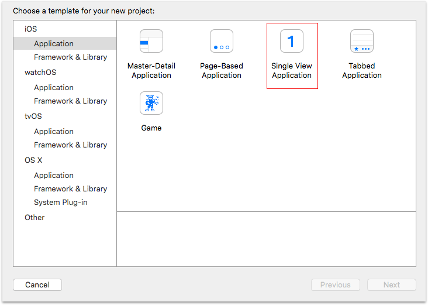
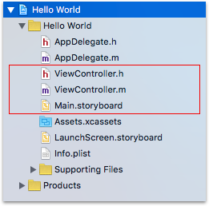
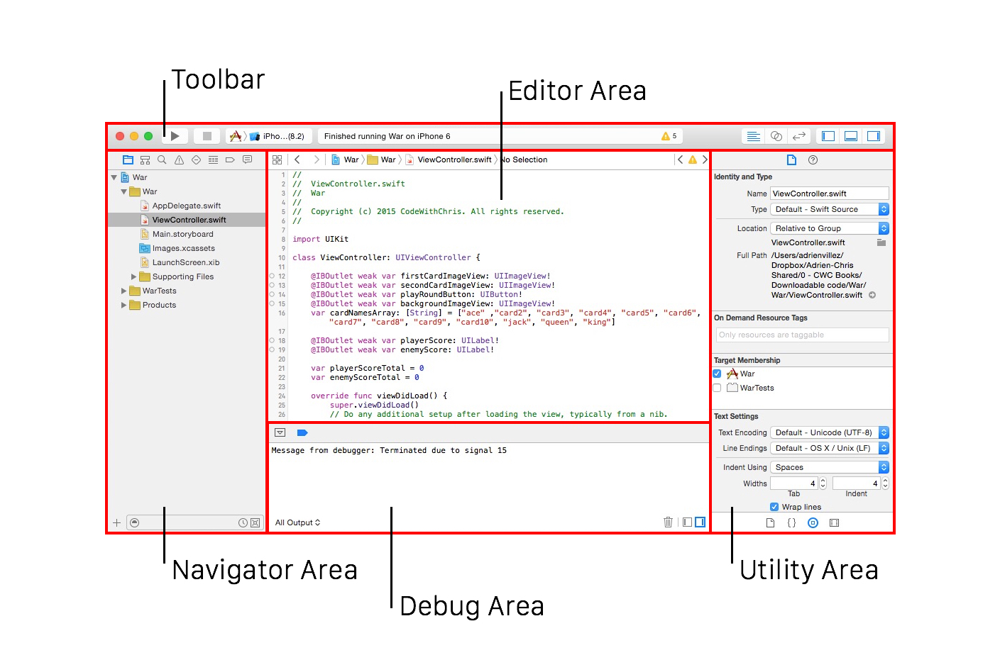

Building a Simple iPhone App with Objective-C
Building the Hello world application will show you how easy it is to get your very first app up and running.
What you'll learn Understanding the Single view-application template Xcode Interface Brief introduction to Auto-layout Brief introduction to iPhone simulator
Understanding the Single View Application template
When you open Xcode for the first time, you need to pick a template that Apple provides in order to create a new iOS project. Apple provides templates so we don’t have to write a lot of boiler-plate code to get our project up and running.
Single View Application

“This template provides a starting point for an application that uses a single view. It provides a view controller to manage the view, and a storyboard or nib file that contains the view.” - Apple
The Single View Application comes with three new files:

- ViewController.h
- Interface for the UIViewController subclass
- ViewController.m
- Implementation for UIViewController subclass
- Main.storyboard
- The storyboard contains a single scene representing the view controller and its empty view.
Let’s take a look at the implementation of the AppDelegate’s application:didFinishLaunchingWithOptions: method contains no significant code at all.
-(BOOL)application:(UIApplication *)application
didFinishLaunchingWithOptions:(NSDictionary *)launchOptions
{
// Override point for customization after application launch.
return YES;
}
Where does our app’s main window come from then? It turns out that, by specifying a storyboard in the app’s Info.plist file (under the UIMainStoryboard key), the UIApplication object automatically creates a window and assigns it to our app delegate’s window property.
The UIApplication instance also loads the storyboard, initializes the storyboard’s initial view controller and installs it as the window’s rootViewController.
This way, control reaches your root view controller’s viewDidLoad method (where you usually place code to configure your app’s initial view) without a single line of code.
Back in the day, before the Single View Application existed - the implementation of application:didFinishLaunchingWithOptions: method looked like this:
- (BOOL)application:(UIApplication *)application
didFinishLaunchingWithOptions:(NSDictionary *)launchOptions
{
self.window = [[UIWindow alloc] initWithFrame:[[UIScreen mainScreen] bounds]];
self.viewController = [[ViewController alloc] initWithNibName:@"ViewController" bundle:nil];
self.window.rootViewController = self.viewController;
[self.window makeKeyAndVisible];
return YES;
}
The programmer was responsible for:
- Initializing the app delegate’s window property.
- Initializing the window’s rootViewController property
- Making the window visible.
Throughout the course we will mainly be using Xcode’s starter templates. For educational purposes you will learn how to do it all programmatically as well.
Thank you Apple for saving us some time \<3
Xcode Interface

“Xcode is Apple’s integrated development environment (IDE) that you use to build apps for Apple products including the iPad, iPhone, Apple Watch, and Mac. Xcode provides tools to manage your entire development workflow—from creating your app, to testing, optimizing, and submitting it to the App Store.” - Apple
Xcode is a beast and we highly recommend reviewing the official documentation.
Auto Layout
Auto Layout is a constraint based approach of building user interfaces on iOS & Mac OS X. If you use Auto Layout in your apps your UI will dynamically respond to both internal (iOS) and external changes (iPhone hardware).
Read the official documentation for Auto Layout.
iPhone Simulator
The iPhone simulator is the best prototyping tool for building iOS apps. With the simulator you can as it’s named “simulate” what you application will look and feel like on a physical device before registering for Apple’s developer program. Think of it as a really functional previewer.
Learn more about the iPhone Simulator here.